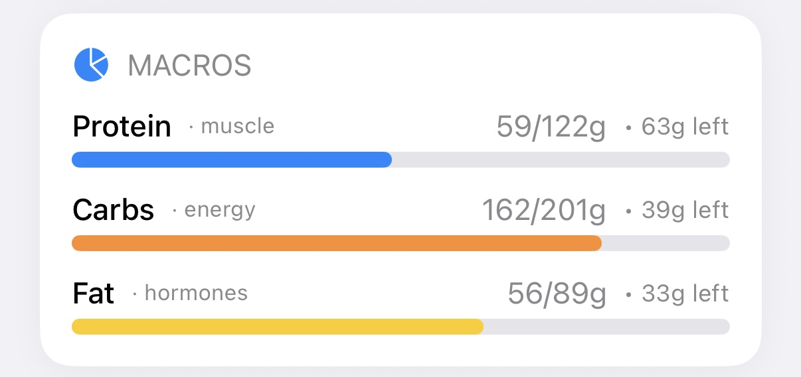
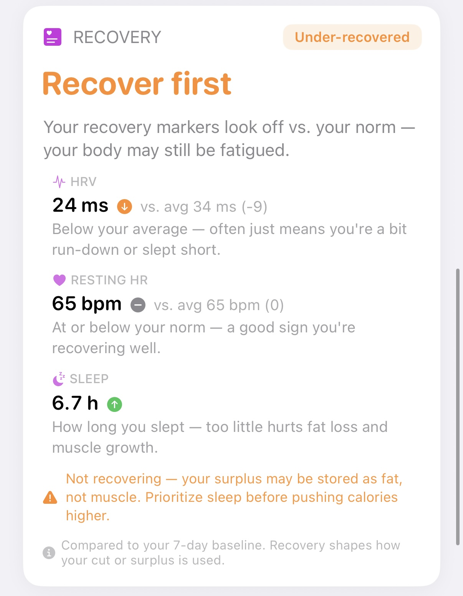

影張相，
卡路里即刻出嚟。
GainCut 係為真正有操練嘅人而做嘅 AI 卡路里 App。 影你碟飯，佢會計出蛋白質、碳水同脂肪， 再對住你嘅階段目標記錄低。
每月 30 次免費 AI 掃描 · 唔使信用卡 · iOS 17+


健身室你計到好準，
但厨房你係靠估。
你嘅重量計到公斤，組數計到次。但係你食嘢嘅時候， 唔知自己究竟食夠 120 克蛋白質，定係得 60 克。 呢個唔係意志力問題，係度量問題。 一個你從來冇量過嘅數字，幾多決心都補唔返。
大部分 App 都敗喺你真正食嘅嘢食。
西式為主嘅食物資料庫，從來冇見過叉燒、一碗雲吞麵、 一籠點心。所以你只能靠估，或者搵足二十分鐘， 到星期四就頂唔順放棄。
GainCut 喺香港做出嚟。佢睇你面前嘅碟飯， 唔會叫你喺一個冇你嘢食嘅清單入面揀。
- 認得本地菜式，唔止認得入口嘅包裝食品
- 份量由相片估算，唔使磅
- 一餐一筆記錄，十秒內搞掂

三個步驟，大約十秒。
食物記錄 App 最重要嘅係你會一直用落去。 每個步驟都係為咗減少一個令你放棄嘅理由。
影低碟飯
開相機，影你嘅餐。唔使掃條碼、唔使打字搵品牌名。
佢認得啲嘢食
模型會認出菜式、估算份量，再拆成蛋白質、碳水同脂肪。
對住你目標記錄
餐會計入一個由你實際消耗同訓練階段計出嚟嘅卡路里預算 — 增肌、減脂或者維持。
你嘅目標係計出嚟，唔係估。
GainCut 由你嘅基礎代謝率開始，加上你活動實際燒嘅卡路里， 再套用你嘅階段 — 增肌就盈餘，減脂就赤字，維持就唔加減。
每個目標都會顯示個算式，你可以清楚睇到個數字點嚟 — 唔同意都可以質疑佢。

佢追蹤啲乜，點解每樣都重要。
每個營養素都有原因。
淨係計卡路里，分唔到你減嘅係脂肪定肌肉。 GainCut 將每餐拆成三大營養素，同時講明每樣做乜。
- 蛋白質 — 保住同建立肌肉
- 碳水 — 操練嘅能量
- 脂肪 — 荷爾蒙調節

盈餘要配合恢復，先會變肌肉。
食多咗但每晚淨係瞓六個鐘，好多盈餘都去唔到肌肉。 GainCut 會讀 Apple Health 嘅 HRV、靜止心率同睡眠， 計出每日恢復分數，話你知今日應該推，定係應該收。
- 由你本身嘅數據計，唔係用一般平均值
- 每日一個提示：推定收
- 需要 Apple Health 數據先有用

GainCut 唔會做啲乜。
由相片估出嚟嘅數字，始終係估算。呢度清楚講明界線， 你買嘅時候就知自己買緊乜。
| 相片掃描係估算 | 由相片估份量一定有誤差。GainCut 嘅目標係「夠準到你用得着」，唔係取代實驗室磅。 |
|---|---|
| 改嘅係你，唔係模型 | 每個結果儲存之前你都可以改。App 永遠唔會偷偷改你嘅判斷。 |
| 卡路里唔係對你身體嘅量度 | 目標由公式同你記錄嘅活動計出。佢係一個起點，之後再調，唔係醫療處方。 |
| 淨係 iPhone，iOS 17 或以上 | 冇 Android 版本。恢復分數需要有 Apple Health 數據先有用。 |
| 唔係醫療儀器 | GainCut 唔會診斷、治療或者管理任何疾病。如果你有臨床需要，請睇專業人士。 |
免費版真係用得。
每月三十次 AI 掃描，大約等於一日一餐。 如果你只需要咁多，你永遠都唔使俾錢。
唔使信用卡，唔會試用完就冇
- 每月 30 次 AI 食物掃描
- 完整營養素分析
- 按訓練階段計嘅卡路里目標
- 由 Apple Health 計嘅恢復分數
- 七日平衡
或者 US$14.99／年 — 最多慳 45%。年費計劃有 3 日免費試用。 App Store 會用你當地貨幣顯示價錢。
- 無限次 AI 食物掃描
- 包含免費版所有功能
- 新功能優先使用
- 隨時喺 iOS 設定取消
付款由 Apple 處理。你可以隨時喺 App Store 訂閱設定取消。
值得問嘅問題。
GainCut 係唔係免費？
係。免費版每月包括 30 次 AI 食物掃描，唔會過期。 Pro 就取消每月掃描上限：US$1.99／月 或 US$14.99／年 （最多慳 45%），年費計劃有 3 日免費試用。 App Store 會用你當地貨幣收費。
佢認唔認得香港嘢食？
喺香港做出嚟，所以認得本地菜式 — 叉燒、白飯、麵、 點心、港式奶茶 — 唔會好似西式資料庫咁認唔到就當錯。
要唔要 Apple Watch 或者 Whoop？
唔使。恢復分數會讀 Apple Health 嘅 HRV、靜止心率同睡眠。 任何寫到 Apple Health 嘅裝置都用得，有啲數字淨係用手機都夠。
如果 AI 認錯咗我餐飯點算？
儲存之前你可以改。每個掃描結果都會先俾你確認， 所以認錯嘅代價係改一次，唔係成日嘅數據都錯。 你唔確認嘅話，佢唔會儲存。
我啲健康數據私隱點？
營養同健康數據留喺你部機同 Apple Health 入面。 餐相會送去食物識別服務認菜式； 唔會用嚟建立廣告檔案，亦都唔會賣。
詳細睇私隱政策。
用邊啲裝置？
iPhone，iOS 17.0 或以上。冇 Android 版本。
邊個做 GainCut？
IdeaFactory — 一間香港嘅父子檔產品工作室。 呢個 App 係有操練嘅人做俾有操練嘅人用。 支援電郵：support@ideafactory.one， 或者睇支援頁。